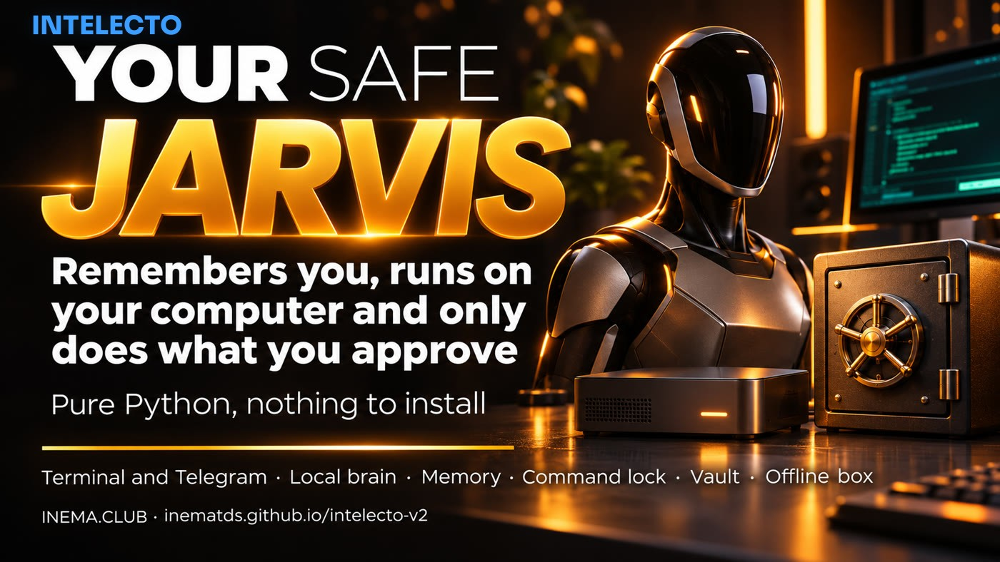
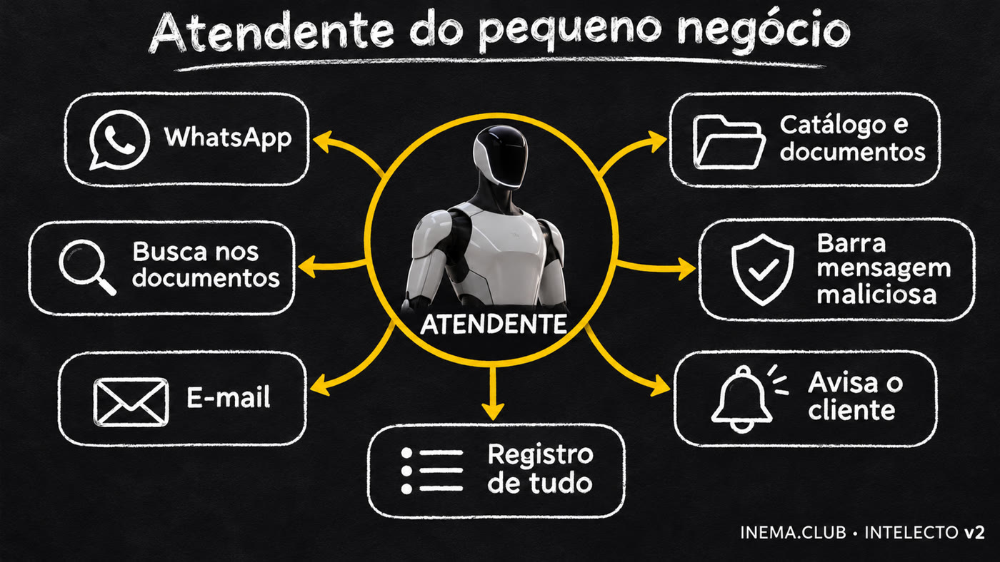
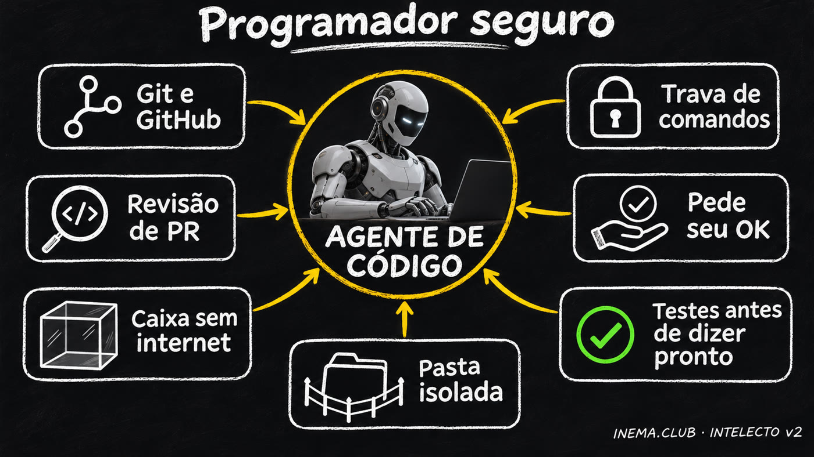
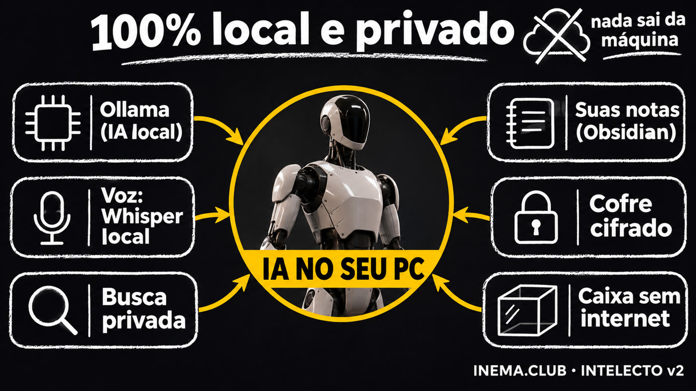
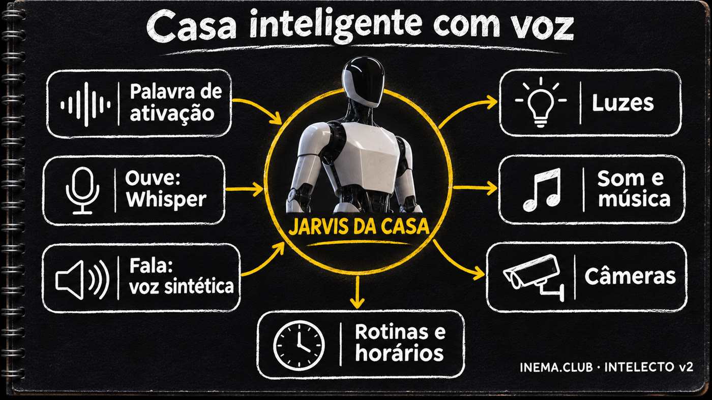

Ready-made assistants store your life on someone else’s server, while agents that control your computer can read your passwords and delete files. INTELECTO v2 is free, runs on your machine, thinks with free local AI, remembers what you’ve told it, and only does anything risky after you approve it.

You want a personal AI assistant that remembers your details, but you don’t want to hand over your data or leave an AI loose on your computer. INTELECTO v2 is a free personal assistant you install on your computer and talk to through the terminal or Telegram. It thinks with AI running on your machine (Ollama, at no cost) or in the cloud, stores memories, works only in a designated workspace, and asks for your approval before running any command that does more than read. You need Python 3.10 or later; nothing else is required.
You can have both: an assistant that truly helps and keeps you safe.
With ready-made assistants, everything you tell them is stored by the company. INTELECTO keeps its memory in a file on your computer, and with local AI nothing leaves your machine.
An agent that runs commands on its own can access your passwords, the internet, and your files. All it takes is one mistake or malicious text hidden on a website.
Agent frameworks have thousands of files. INTELECTO has 1,500 lines, divided into 8 parts, that you can read in an afternoon.
Each part lives in its own folder. You can understand the whole thing without programming.
How you talk to it: through the terminal or Telegram. On Telegram, it only replies to you.
It thinks, uses a tool, checks the result, and replies. At most 5 rounds, so it won’t run forever.
Four text files: who it is, how it works, who you are, and what it already knows. You change them by writing.
The AI that thinks: one on your computer (Ollama, free) or one in the cloud (OpenRouter, a paid service that needs an account).
It saves what you tell it and finds it again by keywords, even without accents. It’ll still be there tomorrow.
Save and search memories, read, write, and list files (only in its own folder), and run commands.
Decides whether a command can run and stores encrypted passwords. Everything it does is logged.
If you enable it, each command runs in a disposable sandbox, without internet access or your passwords.
Before running any command, the guardrail checks what it does. The default is to ask: only read-only commands pass automatically.
Commands that only look: list files, read text, check the date, or see how much disk space is available.
Anything else: write, move, or delete a file, install something, or access the internet. It asks in the terminal or sends “/yes or /no” on Telegram.
Destructive actions: erase the disk or your home folder, format a drive, shut down the computer, or download and run a script. Even with your approval.
v1 only had a list of forbidden words: "rm -rf /" was blocked, but "rm -r -f /" got through. v2 understands both forms and 19 other tested variations, and anything outside the read-only list requires your approval. The list isn’t the only protection: use the sandbox for commands you don’t know.
Real example: you send "lembre que meu nome é Ana" (remember that my name is Ana) and, the next day, "qual meu nome?" (what's my name?). Here's what happens inside INTELECTO.
The message comes in through the terminal or Telegram. On Telegram, it checks whether you sent it (owner list); messages from anyone else are ignored and logged.
Any phrase that starts with "lembre que" (remember that), "guarde" (save) or "anote" (note down) is stored immediately, without relying on the AI to decide. That's why even a small model remembers. A question (with "?") never becomes a memory.
It brings together identity files (who it is, how it works, who you are), memories relevant to the question ("nome" finds "meu nome é Ana") and recent conversations.
All of this goes to the AI (on your computer or in the cloud). It answers or requests a tool: save, search, read a file, run a command.
If it's a command, the gate decides: run it, ask you, or refuse. Once approved, it runs in the working folder, or in the offline sandbox if you turned it on. The result goes back to the AI, for up to 5 rounds.
You receive the answer, and everything it did (command, tool, memory, error) is recorded in an audit log line so you can check it later.
INTELECTO v2 is the foundation that already works. To go further (WhatsApp, calendar, smart home, voice…), open the grocery store: 144 ingredients from 12 agent projects, in 8 aisles. Choose what you want, and it generates the meu-assistente.md file; Claude Code or Codex then builds on INTELECTO by following that file.
Click ingredients in the aisles, or load one of the 5 ready-made examples below.
Each item is marked: ✅ already in INTELECTO, 🟡 partly there, ➕ missing (and which component it fits into). At the end, you'll find the rules for the agent: one item at a time, with a test.
Copy the file into the INTELECTO folder, open Claude Code or Codex there, and ask it to implement it. Safer option: inside caixa-do-agente.




Items marked ➕ don't exist in INTELECTO yet: the agent builds them by following the file. Check whatever it builds with the tests before using it.
Tested on 11/12/2026 on a Linux computer. Anything not tested live is stated here.
| Part | How it was tested |
|---|---|
| Loop, memory, tools, guardrail, approval, vault, and audit log | 68 automated tests, all passing |
| Local AI (Ollama) | Live with the qwen3.6 model: it saved “my name is Nei and I live in Porto Alegre” and, in a new conversation, replied “Your name is Nei and you live in Porto Alegre.” With llama3.2 (a small model), it rarely uses the tools on its own, but since version 2.0.1 anything starting with "lembre que" (remember that) is saved directly, and it also remembered the name and city. |
| Sandbox (command in a container) | Live: it can only see the workspace folder, can’t see your terminal’s environment variables, and has no internet access |
| OpenRouter and Telegram | Against test servers on the same computer (format, key, owner filter, approval with /yes). Not tested live: they require your key and bot. |
| macOS | Not tested. The macOS service and the vault key based on the machine’s number are in the code. |
From here on, it’s the technical section: installing, configuring, and running it. You don’t need this section to understand what’s above.
Just the Python standard library. The cryptography package is optional (vault with Fernet).
A command-line interface with 8 subcommands: chat, demo, telegram, configure, vault, memory, audit, and check.
Everything for the assistant lives in one folder: config, memory, identity, workspace, audit log, and vault. Change it with INTELECTO_HOME.
python3 -m pytest -q. No test calls a real API.
Python already comes with Linux and recent macOS. git (the program that downloads the project) may be missing on a new machine.
python3 --version && git --version sudo apt install -y git # Ubuntu, if git is missing xcode-select --install # macOS, if git is missing
Free at ollama.com. The tested model needs a good graphics card; llama3.2 runs on a basic computer: it makes little use of the tools, but remembers what you ask with "lembre que…" (remember that…).
ollama pull qwen3.6:35b-a3b ollama pull llama3.2 # lighter
Optional. Only needed if you want to run commands in an offline sandbox.
docker run --rm hello-worldThe demo uses a mock brain: it runs without internet or a model.
cd ~ && git clone https://github.com/inematds/intelecto-v2 && cd intelecto-v2 python3 -m intelecto demo
It asks for a name, personality, brain, model, where to run commands (locally or in the sandbox), and approval settings. Press Enter to keep the suggested value.
llama3.2).perigosos (default) follows “How it decides”; sempre asks even before listing files; nunca doesn’t ask anything and only lets read-only commands run.python3 -m intelecto configurar
Edit the 4 identity files. Each line starting with "- " in MEMORY.md becomes a memory the first time.
nano ~/.intelecto2/identidade/USER.md # who you are nano ~/.intelecto2/identidade/AGENTS.md # work rules (memory, tools) nano ~/.intelecto2/identidade/SOUL.md # personality nano ~/.intelecto2/identidade/MEMORY.md # initial facts
python3 -m intelecto verificar # → all good python3 -m intelecto # chat in the terminal; 'sair' to exit
If the model shows [FALTA], download it with ollama pull <model> or run configurar and pick one you already have.
In Telegram, open @BotFather, send /newbot, choose a name and copy the token it replies with (your bot's secret code, like 123456:ABC…). Save that token in the vault. Start the bot, send it /id, and enter the number it replies with in configurar (the Telegram IDs question; for the other questions, just press Enter). Without an owner configured, it only responds to /id.
python3 -m intelecto cofre guardar telegram # paste the token; it won’t appear on screen python3 -m intelecto telegram # send /id to the bot, then press Ctrl+C python3 -m intelecto configurar # enter your ID python3 -m intelecto telegram
# Linux (user systemd; change the folder in the file if you didn’t clone to ~/intelecto-v2) mkdir -p ~/.config/systemd/user cp servico/intelecto-telegram.service ~/.config/systemd/user/ systemctl --user daemon-reload && systemctl --user enable --now intelecto-telegram # macOS: replace SEU_USUARIO in servico/club.inema.intelecto.plist and copy it to ~/Library/LaunchAgents/
With Docker, each approved command runs in a container with no network, and only the workspace folder.
docker pull python:3.12-slim python3 -m intelecto conversar --executor caixa # or set executor to caixa in configurar
The key goes in the vault, never in config. Each message costs money depending on the model you choose.
python3 -m intelecto cofre guardar openrouter python3 -m intelecto conversar --provedor openrouter --modelo anthropic/claude-sonnet-5.5
python3 -m intelecto memoria # recent memories python3 -m intelecto memoria cachorro # search python3 -m intelecto auditoria -n 20 # commands and tools, what ran and what didn’t
python3 -m intelecto demo
você> rode: ls
intelecto> Feito. Resultado de rodar_comando: [local, saída 0]
você> rode: echo teste > nota.txt
intelecto> Feito. Resultado de rodar_comando: não rodei: o dono não aprovou
você> rode: rm -rf /
intelecto> Feito. Resultado de rodar_comando: não rodei: bloqueado: apagar pasta do sistema ou a pasta pessoal
você> leia ../../etc/passwd
intelecto> Feito. Resultado de ler_arquivo: fora da pasta de trabalho
The program replies in Portuguese. In the demo, no one approves, so “echo” doesn’t run. In a real conversation, it asks you.
| v1 | v2 | |
|---|---|---|
| Code | The README described the assistant, but there was only a minimal example with a mock brain | Full assistant, 1,500 lines, 68 tests |
| Commands | List of forbidden words | Run / ask / refuse, with ask as the default |
| Telegram | Just the structure | Works and only replies to the owners |
| Isolation | Promised in the course | Sandbox per command (Docker without network) |
| Platform | macOS only | Tested on Linux; macOS in the code |
The v1 and the v1 course are still online. Its method still holds: choose ingredients from the framework grocery store and give the brief to Claude Code or Codex to build an assistant your way.
INTELECTO protects what the assistant does. caixa-do-agente protects your project while you, Claude Code, or Codex work on it.
When you let an AI agent work on your computer by itself, it can access your passwords (.env, keys), the internet, and your real files. caixa-do-agente does the work in a closed room, in 3 steps:
Makes a copy of the project in a temporary folder and leaves out passwords and keys.
The command runs on the copy, in a container (an isolated sandbox inside your computer) without internet, with memory, processor, and time limits.
Shows what changed in a .patch file (a list of changes), then deletes the container and the copy. The original only changes if you apply the patch.
It’s like letting a builder work on a scale model of your house, without the safe key: at the end, you review what they did and decide whether to do the same in the real house. The kit’s second tool, the auditor, only reads and gives a score from 0 to 10 for the protection available to someone programming in the project.
The password file (.env) was left out of the copy, 67 tests passed and 1 was skipped (the one requiring Docker, which isn’t available inside), and 0 files changed. Because the sandbox has no internet, the test program (pytest) runs from an image prepared beforehand (caixa/Dockerfile).
The auditor checks the project and the programming tools you use with it (Claude Code, Codex). The score went up after two changes: we removed the password file (.env) from the project and added a rules file for agents (CLAUDE.md).
The “sandbox” layer was missing: on the computer where we tested, Claude Code and Codex are configured to run without isolation. That’s a setting on each computer, so run the auditor on yours to see your score. To add this layer, run your agent inside caixa.sh.
# 1. image with pytest (the sandbox has no internet to install anything) docker build -t intelecto-v2-testes caixa/ # 2. tests on a copy without .env or network, deleted at the end ~/caixa-do-agente/caixa.sh ~/intelecto-v2 --imagem intelecto-v2-testes -- python3 -m pytest -q -p no:cacheprovider # 3. the score (read-only; changes nothing) python3 ~/caixa-do-agente/auditar.py ~/intelecto-v2
To get the sandbox: git clone https://github.com/inematds/caixa-do-agente ~/caixa-do-agente (requires Docker and Python 3).